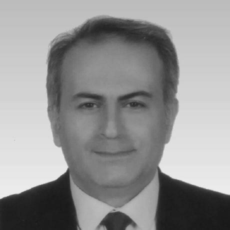

Dr. Oğuzhan TAŞ(Phd.)
Developer Blog
Research Fields
Artificial Intelligence, Machine Learning, Deep Learning
Cybersecurity, Network Security, Cryptography
Internet of Things(IoT), Blockchain Security
Education
Phd: Computer Eng., Faculty of Engineering and Natural Sciences, IZU.
Msc: Computer Eng., Faculty of Engineering, Firat University.
Undergraduate: Computer Science, Technical Faculty, Firat University.
Courses(Beykent,Gelisim, Istinye, Firat)
- BIL-415 Machine Learning(Gelisim Unv., Comp. Eng.)
- BIL-421 Data Mining(Gelisim Unv., Comp. Eng.)
- BIL-552 Advanced Machine Learning(Gelisim Unv., Comp. Eng.)
- BIL-534 Genetic Algorithms and Opt.Methods(Gelisim Unv., Comp. Eng.)
- BIL-321 Cloud Computing(Gelisim Unv., Comp. Eng.)
- BIL-415 Machine Learning(Gelisim Unv., Comp. Eng.)
- BIL-201 Object Oriented Programming(Gelisim Unv., Comp. Eng.)
- BIL-206 Visual Programming(Gelisim Unv., Comp. Eng.)
- YBS-208 Data and Text Mining(Gelisim Unv., MIS)
- YBS-106 System Analysis and Algorithms(Gelisim Unv., MIS)
- BIL-216 Object Oriented Programming-C#(Gelisim Univ, Mecatronics Eng.,Aeronautical Eng.))
- Big Data(Gelisim Unv., MIS)
- BIL-202 JavaScript Programming-II(Istinye Unv.))
- BIL-105 Unix Programming I (Istinye Unv.)
- BIL-106 Unix Programming II(Istinye Unv.)
- BIL-206Database Man. Systems(Istinye Unv.)
- BIL-203 Object Oriented Programming-C++(Istinye Unv.))
- BIL-201 Web Programming-PHP(Istinye Unv.)
- Front-end Web Programming-HTML,CSS,JS(Beykent Unv., MIS))
- Visual Programming-C#(Beykent Unv., MIS))
- Object Oriented Programming with Java(Beykent Unv. 3 class))
- Back-end Web Programming(PHP,Code Igniter,Laravel- Professional Projects)
- Software Engineering(Firat Unv.,Comp.Eng.)
- Advanced Developments in Computer Eng.(Firat Unv.)
- Robotic Programming(C++) with Arduino
- Introduction to Programming (C#)
- Introduction to Programming (Python)
- Object Oriented Programming (Java)
- Object Oriented Programming (C++)
- Visual Programming with C#
Research
Publications
Journals
- Oğuzhan TAŞ, Farzad Kiani, “Nesnelerin İnterneti (IoT) ve kablosuz algılayıcı ağların güvenliğine yapılan saldırıların tespit edilmesi ve önlenmesi”, Politeknik Dergisi, Cilt 24,Sayı:1, 2021.
- Oğuzhan TAŞ, Farzad Kiani, “Blok Zinciri Teknolojisine yapılan saldırılar üzerine bir inceleme”, Bilişim Teknolojileri Dergisi, Gazi University, Cilt 11, Sayı: 4, 369-382, 2018.
- Oğuzhan TAŞ, Bilal Alataş, E. Akın, “A New Approach To Stream Cipher: UnsystematicCipher”(ESCI Index), IU-Journal of Electrical & Electronics Engineering 4 (1), IstanbulUniversity Cerrahpaşa(ELECTRICA), 1057-1062, 2004.
Conferences
- Oğuzhan TAŞ, Amani YAHYAOUI, “Machine Learning based Intrusion Detection Systemusing Grey Wolf Optimization for Feature Selection”, 6th International Conference on Computatition Mathematics and Engineering, 2022. (Fulltext and Oral Presentation)
- Oğuzhan TAŞ, M. Mısır, “Anomali Tabanlı Saldırıların Tespit Edilmesi için Makine Öğrenmesi Algoritmalarının Kullanılması”, İZÜ Fen Bilimleri Kongresi, 5-6 Haziran 2021. (Oral Presentation)
- Oğuzhan TAŞ, M. Mısır, “Saldırı Tespit Sistemleri Üzerine Yapılan İncelemelerin VeriSetlerinin ve Yaklaşımların Karşılaştırılması”, İZÜ Fen Bilimleri Kongresi, 5-6 Haziran, 2021.(Oral Presentation)
- Oğuzhan TAŞ, Farzad Kiani, “Blockchain Solutions for IoT Security”, ICCIE 2018: 20th International Conference on Computer and Information Engineering, 2018. (Oral Presentation)
- Oğuzhan TAŞ, Farzad Kiani, “A Survey on Automatic Text Summarization”, 2nd WorldConference on Technology, Innovation and Entrepreneurship, May 12-14, 2017, Istanbul,2017 (Fulltext and Oral Presentation)
- Oğuzhan TAŞ, F. Alagöz, “İnternet Üzerinden Güvenli Sohbet için Secure-Chat”, HITEK Havacılıkta İleri Teknolojiler Konferansı, İstanbul, 2004 (Fulltext and Oral Presentation)
- Oğuzhan TAŞ, E. AKIN, “Elektronik Posta Güvenliği için yeni bir Anahtar Dağıtım Protokolü”,I V. GAP Mühendislik Kongresi, Şanlıurfa, 2002 (Fulltext and Oral Presentation).
- Oğuzhan TAŞ, B. Alataş, E. Akın, “Akış Şifreleme Tekniğine yeni bir yaklaşım: Düzensiz Şifreleme”, ELECO’2002 Elektrik-Elektronik Mühendisliği Konferansı, Bursa, 2002 (Fulltext and Oral Presentation).
- Oğuzhan TAŞ, Yalın Kılıç Türel, “Web Ortamında Anket Hazırlanması”, UBMK 1. Ulusal Bilişim ve Multimedya Konferansı, Elazığ, 2001 (Fulltext and Oral Presentation).
- Oğuzhan TAŞ, H.H. Balık, “Konut Tahsis Otomasyonu”, UBMK 1. Ulusal Bilişim ve Multimedya Konferansı, Elazığ, 73-82, Elazığ Nisan 2001 (Fulltext and Oral Presentation).
- Oğuzhan TAŞ, H.H. Balık, “Konut Tahsis Otomasyonu”, AB2002-Akademik Bilişim 2002,Konya, Şubat 2002 (Fulltext and Oral Presentation).